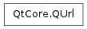

QUrl¶

Synopsis¶
Functions¶
- def __eq__ (url)
- def __lt__ (url)
- def __ne__ (url)
- def __reduce__ ()
- def __repr__ ()
- def addEncodedQueryItem (key, value)
- def addQueryItem (key, value)
- def allEncodedQueryItemValues (key)
- def allQueryItemValues (key)
- def authority ()
- def clear ()
- def encodedFragment ()
- def encodedHost ()
- def encodedPassword ()
- def encodedPath ()
- def encodedQuery ()
- def encodedQueryItemValue (key)
- def encodedQueryItems ()
- def encodedUserName ()
- def errorString ()
- def fragment ()
- def hasEncodedQueryItem (key)
- def hasFragment ()
- def hasQuery ()
- def hasQueryItem (key)
- def host ()
- def isEmpty ()
- def isParentOf (url)
- def isRelative ()
- def isValid ()
- def password ()
- def path ()
- def port ()
- def port (defaultPort)
- def queryItemValue (key)
- def queryItems ()
- def queryPairDelimiter ()
- def queryValueDelimiter ()
- def removeAllEncodedQueryItems (key)
- def removeAllQueryItems (key)
- def removeEncodedQueryItem (key)
- def removeQueryItem (key)
- def resolved (relative)
- def scheme ()
- def setAuthority (authority)
- def setEncodedFragment (fragment)
- def setEncodedHost (host)
- def setEncodedPassword (password)
- def setEncodedPath (path)
- def setEncodedQuery (query)
- def setEncodedQueryItems (query)
- def setEncodedUrl (url)
- def setEncodedUrl (url, mode)
- def setEncodedUserName (userName)
- def setFragment (fragment)
- def setHost (host)
- def setPassword (password)
- def setPath (path)
- def setPort (port)
- def setQueryDelimiters (valueDelimiter, pairDelimiter)
- def setQueryItems (query)
- def setScheme (scheme)
- def setUrl (url)
- def setUrl (url, mode)
- def setUserInfo (userInfo)
- def setUserName (userName)
- def toEncoded ([options=QUrl.None])
- def toLocalFile ()
- def toString ([options=QUrl.None])
- def userInfo ()
- def userName ()
Static functions¶
- def fromAce (arg__1)
- def fromEncoded (url)
- def fromEncoded (url, mode)
- def fromLocalFile (localfile)
- def fromPercentEncoding (arg__1)
- def fromPunycode (arg__1)
- def fromUserInput (userInput)
- def idnWhitelist ()
- def setIdnWhitelist (arg__1)
- def toAce (arg__1)
- def toPercentEncoding (arg__1[, exclude=QByteArray()[, include=QByteArray()]])
- def toPunycode (arg__1)
Detailed Description¶
The PySide.QtCore.QUrl class provides a convenient interface for working with URLs.
It can parse and construct URLs in both encoded and unencoded form. PySide.QtCore.QUrl also has support for internationalized domain names (IDNs).
The most common way to use PySide.QtCore.QUrl is to initialize it via the constructor by passing a PySide.QtCore.QString . Otherwise, PySide.QtCore.QUrl.setUrl() and PySide.QtCore.QUrl.setEncodedUrl() can also be used.
URLs can be represented in two forms: encoded or unencoded. The unencoded representation is suitable for showing to users, but the encoded representation is typically what you would send to a web server. For example, the unencoded URL “http://bühler.example.com” would be sent to the server as “http://xn–bhler-kva.example.com/List%20of%20applicants.xml”.
A URL can also be constructed piece by piece by calling PySide.QtCore.QUrl.setScheme() , PySide.QtCore.QUrl.setUserName() , PySide.QtCore.QUrl.setPassword() , PySide.QtCore.QUrl.setHost() , PySide.QtCore.QUrl.setPort() , PySide.QtCore.QUrl.setPath() , PySide.QtCore.QUrl.setEncodedQuery() and PySide.QtCore.QUrl.setFragment() . Some convenience functions are also available: PySide.QtCore.QUrl.setAuthority() sets the user name, password, host and port. PySide.QtCore.QUrl.setUserInfo() sets the user name and password at once.
Call PySide.QtCore.QUrl.isValid() to check if the URL is valid. This can be done at any point during the constructing of a URL.
Constructing a query is particularly convenient through the use of PySide.QtCore.QUrl.setQueryItems() , PySide.QtCore.QUrl.addQueryItem() and PySide.QtCore.QUrl.removeQueryItem() . Use PySide.QtCore.QUrl.setQueryDelimiters() to customize the delimiters used for generating the query string.
For the convenience of generating encoded URL strings or query strings, there are two static functions called PySide.QtCore.QUrl.fromPercentEncoding() and PySide.QtCore.QUrl.toPercentEncoding() which deal with percent encoding and decoding of QStrings.
Calling PySide.QtCore.QUrl.isRelative() will tell whether or not the URL is relative. A relative URL can be resolved by passing it as argument to PySide.QtCore.QUrl.resolved() , which returns an absolute URL. PySide.QtCore.QUrl.isParentOf() is used for determining whether one URL is a parent of another.
PySide.QtCore.QUrl.fromLocalFile() constructs a PySide.QtCore.QUrl by parsing a local file path. PySide.QtCore.QUrl.toLocalFile() converts a URL to a local file path.
The human readable representation of the URL is fetched with PySide.QtCore.QUrl.toString() . This representation is appropriate for displaying a URL to a user in unencoded form. The encoded form however, as returned by PySide.QtCore.QUrl.toEncoded() , is for internal use, passing to web servers, mail clients and so on.
PySide.QtCore.QUrl conforms to the URI specification from RFC 3986 (Uniform Resource Identifier: Generic Syntax), and includes scheme extensions from RFC 1738 (Uniform Resource Locators). Case folding rules in PySide.QtCore.QUrl conform to RFC 3491 (Nameprep: A Stringprep Profile for Internationalized Domain Names (IDN)).
See also
- class PySide.QtCore.QUrl¶
- class PySide.QtCore.QUrl(url)
- class PySide.QtCore.QUrl(url, mode)
- class PySide.QtCore.QUrl(copy)
Parameters: - mode – PySide.QtCore.QUrl.ParsingMode
- copy – PySide.QtCore.QUrl
- url – unicode
Constructs an empty PySide.QtCore.QUrl object.
Constructs a URL by parsing url . url is assumed to be in human readable representation, with no percent encoding. PySide.QtCore.QUrl will automatically percent encode all characters that are not allowed in a URL.
Example:
url = QUrl("http://www.example.com/List of holidays.xml") # url.toEncoded() == "http://www.example.com/List%20of%20holidays.xml"
To construct a URL from an encoded string, call PySide.QtCore.QUrl.fromEncoded() :
url = QUrl.fromEncoded("http://qtsoftware.com/List%20of%20holidays.xml")
See also
PySide.QtCore.QUrl.setUrl() PySide.QtCore.QUrl.setEncodedUrl() PySide.QtCore.QUrl.fromEncoded() TolerantMode
This is an overloaded function.
Parses the url using the parser mode parsingMode .
See also
Constructs a copy of other .
- PySide.QtCore.QUrl.ParsingMode¶
The parsing mode controls the way PySide.QtCore.QUrl parses strings.
Constant Description QUrl.TolerantMode PySide.QtCore.QUrl will try to correct some common errors in URLs. This mode is useful when processing URLs entered by users. QUrl.StrictMode Only valid URLs are accepted. This mode is useful for general URL validation. In TolerantMode , the parser corrects the following invalid input:
- Spaces and “%20”: If an encoded URL contains a space, this will be replaced with “%20”. If a decoded URL contains “%20”, this will be replaced with a single space before the URL is parsed.
- Single “%” characters: Any occurrences of a percent character “%” not followed by exactly two hexadecimal characters (e.g., “13% coverage.html”) will be replaced by “%25”.
- Reserved and unreserved characters: An encoded URL should only contain a few characters as literals; all other characters should be percent-encoded. In TolerantMode , these characters will be automatically percent-encoded where they are not allowed: space / double-quote / “<” / “>” / “[” / “” / “]” / “^” / “`” / “{” / “|” / “}”
- PySide.QtCore.QUrl.FormattingOption¶
The formatting options define how the URL is formatted when written out as text.
Constant Description QUrl.None The format of the URL is unchanged. QUrl.RemoveScheme The scheme is removed from the URL. QUrl.RemovePassword Any password in the URL is removed. QUrl.RemoveUserInfo Any user information in the URL is removed. QUrl.RemovePort Any specified port is removed from the URL. QUrl.RemoveAuthority QUrl.RemovePath The URL’s path is removed, leaving only the scheme, host address, and port (if present). QUrl.RemoveQuery The query part of the URL (following a ‘?’ character) is removed. QUrl.RemoveFragment QUrl.StripTrailingSlash The trailing slash is removed if one is present. Note that the case folding rules in Nameprep , which PySide.QtCore.QUrl conforms to, require host names to always be converted to lower case, regardless of the Qt::FormattingOptions used.
- PySide.QtCore.QUrl.__reduce__()¶
Return type: PyObject
- PySide.QtCore.QUrl.__repr__()¶
Return type: PyObject
- PySide.QtCore.QUrl.addEncodedQueryItem(key, value)¶
Parameters: - key – PySide.QtCore.QByteArray
- value – PySide.QtCore.QByteArray
Inserts the pair key = value into the query string of the URL.
Note: this function does not verify that either key or value are properly encoded. It is the caller’s responsibility to ensure that the query delimiters are properly encoded, if any.
- PySide.QtCore.QUrl.addQueryItem(key, value)¶
Parameters: - key – unicode
- value – unicode
Inserts the pair key = value into the query string of the URL.
The key/value pair is encoded before it is added to the query. The pair is converted into separate strings internally. The key and value is first encoded into UTF-8 and then delimited by the character returned by valueDelimiter(). Each key/value pair is delimited by the character returned by pairDelimiter().
Note
This method does not encode spaces (ASCII 0x20) as plus (+) signs, like HTML forms do. If you need that kind of encoding, you must encode the value yourself and use QUrl::addEncodedQueryItem.
- PySide.QtCore.QUrl.allEncodedQueryItemValues(key)¶
Parameters: key – PySide.QtCore.QByteArray Return type: Returns the a list of query string values whose key is equal to key from the URL.
Note: if the encoded key does not match the encoded version of the query, this function will not work. That is, if the encoded query of this URL is “search=Qt%20Rules”, calling this function with key = “%73earch” will return an empty list.
- PySide.QtCore.QUrl.allQueryItemValues(key)¶
Parameters: key – unicode Return type: list of strings Returns the a list of query string values whose key is equal to key from the URL.
Note
This method does not decode spaces plus (+) signs as spaces (ASCII 0x20), like HTML forms do. If you need that kind of decoding, you must use QUrl::allEncodedQueryItemValues and decode the data yourself.
See also
Return type: unicode Returns the authority of the URL if it is defined; otherwise an empty string is returned.
See also
- PySide.QtCore.QUrl.clear()¶
Resets the content of the PySide.QtCore.QUrl . After calling this function, the PySide.QtCore.QUrl is equal to one that has been constructed with the default empty constructor.
- PySide.QtCore.QUrl.encodedFragment()¶
Return type: PySide.QtCore.QByteArray Returns the fragment of the URL if it is defined; otherwise an empty string is returned. The returned value will have its non-ASCII and other control characters percent-encoded, as in PySide.QtCore.QUrl.toEncoded() .
- PySide.QtCore.QUrl.encodedHost()¶
Return type: PySide.QtCore.QByteArray Returns the host part of the URL if it is defined; otherwise an empty string is returned.
Note: PySide.QtCore.QUrl.encodedHost() does not return percent-encoded hostnames. Instead, the ACE-encoded (bare ASCII in Punycode encoding) form will be returned for any non-ASCII hostname.
This function is equivalent to calling QUrl.toAce() on the return value of PySide.QtCore.QUrl.host() .
See also
- PySide.QtCore.QUrl.encodedPassword()¶
Return type: PySide.QtCore.QByteArray Returns the password of the URL if it is defined; otherwise an empty string is returned. The returned value will have its non-ASCII and other control characters percent-encoded, as in PySide.QtCore.QUrl.toEncoded() .
- PySide.QtCore.QUrl.encodedPath()¶
Return type: PySide.QtCore.QByteArray Returns the path of the URL if it is defined; otherwise an empty string is returned. The returned value will have its non-ASCII and other control characters percent-encoded, as in PySide.QtCore.QUrl.toEncoded() .
- PySide.QtCore.QUrl.encodedQuery()¶
Return type: PySide.QtCore.QByteArray Returns the query string of the URL in percent encoded form.
See also
- PySide.QtCore.QUrl.encodedQueryItemValue(key)¶
Parameters: key – PySide.QtCore.QByteArray Return type: PySide.QtCore.QByteArray Returns the first query string value whose key is equal to key from the URL.
Note: if the encoded key does not match the encoded version of the query, this function will not work. That is, if the encoded query of this URL is “search=Qt%20Rules”, calling this function with key = “%73earch” will return an empty string.
- PySide.QtCore.QUrl.encodedQueryItems()¶
Return type: Returns the query string of the URL, as a map of encoded keys and values.
- PySide.QtCore.QUrl.encodedUserName()¶
Return type: PySide.QtCore.QByteArray Returns the user name of the URL if it is defined; otherwise an empty string is returned. The returned value will have its non-ASCII and other control characters percent-encoded, as in PySide.QtCore.QUrl.toEncoded() .
- PySide.QtCore.QUrl.errorString()¶
Return type: unicode Returns a text string that explains why an URL is invalid in the case being; otherwise returns an empty string.
- PySide.QtCore.QUrl.fragment()¶
Return type: unicode Returns the fragment of the URL.
See also
- static PySide.QtCore.QUrl.fromAce(arg__1)¶
Parameters: arg__1 – PySide.QtCore.QByteArray Return type: unicode Returns the Unicode form of the given domain name domain , which is encoded in the ASCII Compatible Encoding (ACE). The result of this function is considered equivalent to domain .
If the value in domain cannot be encoded, it will be converted to PySide.QtCore.QString and returned.
The ASCII Compatible Encoding (ACE) is defined by RFC 3490, RFC 3491 and RFC 3492. It is part of the Internationalizing Domain Names in Applications (IDNA) specification, which allows for domain names (like "example.com" ) to be written using international characters.
- static PySide.QtCore.QUrl.fromEncoded(url)¶
Parameters: url – PySide.QtCore.QByteArray Return type: PySide.QtCore.QUrl Parses input and returns the corresponding PySide.QtCore.QUrl . input is assumed to be in encoded form, containing only ASCII characters.
The URL is parsed using TolerantMode .
- static PySide.QtCore.QUrl.fromEncoded(url, mode)
Parameters: - url – PySide.QtCore.QByteArray
- mode – PySide.QtCore.QUrl.ParsingMode
Return type: This is an overloaded function.
Parses the URL using parsingMode .
- static PySide.QtCore.QUrl.fromLocalFile(localfile)¶
Parameters: localfile – unicode Return type: PySide.QtCore.QUrl Returns a PySide.QtCore.QUrl representation of localFile , interpreted as a local file.
See also
- static PySide.QtCore.QUrl.fromPercentEncoding(arg__1)¶
Parameters: arg__1 – PySide.QtCore.QByteArray Return type: unicode Returns a decoded copy of input . input is first decoded from percent encoding, then converted from UTF-8 to unicode.
- static PySide.QtCore.QUrl.fromPunycode(arg__1)¶
Parameters: arg__1 – PySide.QtCore.QByteArray Return type: unicode Returns the Punycode decoded representation of pc .
Punycode is a Unicode encoding used for internationalized domain names, as defined in RFC3492. If you want to convert a domain from its ASCII-compatible encoding to the Unicode representation, use PySide.QtCore.QUrl.fromAce() .
- static PySide.QtCore.QUrl.fromUserInput(userInput)¶
Parameters: userInput – unicode Return type: PySide.QtCore.QUrl Returns a valid URL from a user supplied userInput string if one can be deducted. In the case that is not possible, an invalid PySide.QtCore.QUrl.QUrl() is returned.
Most applications that can browse the web, allow the user to input a URL in the form of a plain string. This string can be manually typed into a location bar, obtained from the clipboard, or passed in via command line arguments.
When the string is not already a valid URL, a best guess is performed, making various web related assumptions.
In the case the string corresponds to a valid file path on the system, a file:// URL is constructed, using QUrl.fromLocalFile() .
If that is not the case, an attempt is made to turn the string into a http:// or ftp:// URL. The latter in the case the string starts with ‘ftp’. The result is then passed through PySide.QtCore.QUrl ‘s tolerant parser, and in the case or success, a valid PySide.QtCore.QUrl is returned, or else a PySide.QtCore.QUrl.QUrl() .
Examples:¶
- qt.nokia.com becomes http://qt.nokia.com
- ftp.qt.nokia.com becomes ftp://ftp.qt.nokia.com
- hostname becomes http://hostname
- /home/user/test.html becomes file:///home/user/test.html
Tips to avoid erroneous character conversion when dealing with¶
URLs and strings:
- When creating an URL PySide.QtCore.QString from a PySide.QtCore.QByteArray or a char*, always use QString.fromUtf8() .
- Favor the use of QUrl.fromEncoded() and QUrl.toEncoded() instead of PySide.QtCore.QUrl (string) and QUrl.toString() when converting PySide.QtCore.QUrl to/from string.
- PySide.QtCore.QUrl.hasEncodedQueryItem(key)¶
Parameters: key – PySide.QtCore.QByteArray Return type: PySide.QtCore.bool Returns true if there is a query string pair whose key is equal to key from the URL.
Note: if the encoded key does not match the encoded version of the query, this function will return false. That is, if the encoded query of this URL is “search=Qt%20Rules”, calling this function with key = “%73earch” will return false.
See also
- PySide.QtCore.QUrl.hasFragment()¶
Return type: PySide.QtCore.bool Returns true if this URL contains a fragment (i.e., if # was seen on it).
- PySide.QtCore.QUrl.hasQuery()¶
Return type: PySide.QtCore.bool Returns true if this URL contains a Query (i.e., if ? was seen on it).
- PySide.QtCore.QUrl.hasQueryItem(key)¶
Parameters: key – unicode Return type: PySide.QtCore.bool Returns true if there is a query string pair whose key is equal to key from the URL.
- PySide.QtCore.QUrl.host()¶
Return type: unicode Returns the host of the URL if it is defined; otherwise an empty string is returned.
See also
- static PySide.QtCore.QUrl.idnWhitelist()¶
Return type: list of strings Returns the current whitelist of top-level domains that are allowed to have non-ASCII characters in their compositions.
See PySide.QtCore.QUrl.setIdnWhitelist() for the rationale of this list.
See also
- PySide.QtCore.QUrl.isEmpty()¶
Return type: PySide.QtCore.bool Returns true if the URL has no data; otherwise returns false.
- PySide.QtCore.QUrl.isParentOf(url)¶
Parameters: url – PySide.QtCore.QUrl Return type: PySide.QtCore.bool Returns true if this URL is a parent of childUrl . childUrl is a child of this URL if the two URLs share the same scheme and authority, and this URL’s path is a parent of the path of childUrl .
- PySide.QtCore.QUrl.isRelative()¶
Return type: PySide.QtCore.bool Returns true if the URL is relative; otherwise returns false. A URL is relative if its scheme is undefined; this function is therefore equivalent to calling PySide.QtCore.QUrl.scheme() . PySide.QtCore.QUrl.isEmpty() .
- PySide.QtCore.QUrl.isValid()¶
Return type: PySide.QtCore.bool Returns true if the URL is valid; otherwise returns false.
The URL is run through a conformance test. Every part of the URL must conform to the standard encoding rules of the URI standard for the URL to be reported as valid.
def checkUrl(url): if !url.isValid(): print "Invalid URL: %s" % url.toString() return False return True
- PySide.QtCore.QUrl.__ne__(url)¶
Parameters: url – PySide.QtCore.QUrl Return type: PySide.QtCore.bool Returns true if this URL and the given url are not equal; otherwise returns false.
- PySide.QtCore.QUrl.__lt__(url)¶
Parameters: url – PySide.QtCore.QUrl Return type: PySide.QtCore.bool Returns true if this URL is “less than” the given url . This provides a means of ordering URLs.
- PySide.QtCore.QUrl.__eq__(url)¶
Parameters: url – PySide.QtCore.QUrl Return type: PySide.QtCore.bool Returns true if this URL and the given url are equal; otherwise returns false.
- PySide.QtCore.QUrl.password()¶
Return type: unicode Returns the password of the URL if it is defined; otherwise an empty string is returned.
See also
- PySide.QtCore.QUrl.path()¶
Return type: unicode Returns the path of the URL.
See also
- PySide.QtCore.QUrl.port(defaultPort)¶
Parameters: defaultPort – PySide.QtCore.int Return type: PySide.QtCore.int This is an overloaded function.
Returns the port of the URL, or defaultPort if the port is unspecified.
Example:
ftp = QFtp() ftp.connectToHost(url.host(), url.port(21))
- PySide.QtCore.QUrl.port()
Return type: PySide.QtCore.int Returns the port of the URL, or -1 if the port is unspecified.
See also
- PySide.QtCore.QUrl.queryItemValue(key)¶
Parameters: key – unicode Return type: unicode Returns the first query string value whose key is equal to key from the URL.
Note
This method does not decode spaces plus (+) signs as spaces (ASCII 0x20), like HTML forms do. If you need that kind of decoding, you must use QUrl::encodedQueryItemValue and decode the data yourself.
- PySide.QtCore.QUrl.queryItems()¶
Return type: Returns the query string of the URL, as a map of keys and values.
Note
This method does not decode spaces plus (+) signs as spaces (ASCII 0x20), like HTML forms do. If you need that kind of decoding, you must use QUrl::encodedQueryItems and decode the data yourself.
- PySide.QtCore.QUrl.queryPairDelimiter()¶
Return type: PySide.QtCore.char Returns the character used to delimit between key-value pairs in the query string of the URL.
- PySide.QtCore.QUrl.queryValueDelimiter()¶
Return type: PySide.QtCore.char Returns the character used to delimit between keys and values in the query string of the URL.
- PySide.QtCore.QUrl.removeAllEncodedQueryItems(key)¶
Parameters: key – PySide.QtCore.QByteArray Removes all the query string pairs whose key is equal to key from the URL.
Note: if the encoded key does not match the encoded version of the query, this function will not work. That is, if the encoded query of this URL is “search=Qt%20Rules”, calling this function with key = “%73earch” will do nothing.
See also
- PySide.QtCore.QUrl.removeAllQueryItems(key)¶
Parameters: key – unicode Removes all the query string pairs whose key is equal to key from the URL.
See also
- PySide.QtCore.QUrl.removeEncodedQueryItem(key)¶
Parameters: key – PySide.QtCore.QByteArray Removes the first query string pair whose key is equal to key from the URL.
Note: if the encoded key does not match the encoded version of the query, this function will not work. That is, if the encoded query of this URL is “search=Qt%20Rules”, calling this function with key = “%73earch” will do nothing.
- PySide.QtCore.QUrl.removeQueryItem(key)¶
Parameters: key – unicode Removes the first query string pair whose key is equal to key from the URL.
- PySide.QtCore.QUrl.resolved(relative)¶
Parameters: relative – PySide.QtCore.QUrl Return type: PySide.QtCore.QUrl Returns the result of the merge of this URL with relative . This URL is used as a base to convert relative to an absolute URL.
If relative is not a relative URL, this function will return relative directly. Otherwise, the paths of the two URLs are merged, and the new URL returned has the scheme and authority of the base URL, but with the merged path, as in the following example:
baseUrl = QUrl("http://qtsoftware.com/support") relativeUrl = QUrl("../products/solutions") print baseUrl.resolved(relativeUrl).toString() # prints "http://qtsoftware.com/products/solutions"
Calling PySide.QtCore.QUrl.resolved() with ”..” returns a PySide.QtCore.QUrl whose directory is one level higher than the original. Similarly, calling PySide.QtCore.QUrl.resolved() with ”../..” removes two levels from the path. If relative is “/”, the path becomes “/”.
See also
- PySide.QtCore.QUrl.scheme()¶
Return type: unicode Returns the scheme of the URL. If an empty string is returned, this means the scheme is undefined and the URL is then relative.
- PySide.QtCore.QUrl.setAuthority(authority)¶
Parameters: authority – unicode Sets the authority of the URL to authority .
The authority of a URL is the combination of user info, a host name and a port. All of these elements are optional; an empty authority is therefore valid.
The user info and host are separated by a ‘@’, and the host and port are separated by a ‘:’. If the user info is empty, the ‘@’ must be omitted; although a stray ‘:’ is permitted if the port is empty.
The following example shows a valid authority string:

See also
- PySide.QtCore.QUrl.setEncodedFragment(fragment)¶
Parameters: fragment – PySide.QtCore.QByteArray Sets the URL’s fragment to the percent-encoded fragment . The fragment is the last part of the URL, represented by a ‘#’ followed by a string of characters. It is typically used in HTTP for referring to a certain link or point on a page:

The fragment is sometimes also referred to as the URL “reference”.
Passing an argument of QByteArray() (a null PySide.QtCore.QByteArray ) will unset the fragment. Passing an argument of PySide.QtCore.QByteArray (“”) (an empty but not null PySide.QtCore.QByteArray ) will set the fragment to an empty string (as if the original URL had a lone “#”).
- PySide.QtCore.QUrl.setEncodedHost(host)¶
Parameters: host – PySide.QtCore.QByteArray Sets the URL’s host to the ACE- or percent-encoded host . The host is part of the user info element in the authority of the URL, as described in PySide.QtCore.QUrl.setAuthority() .
- PySide.QtCore.QUrl.setEncodedPassword(password)¶
Parameters: password – PySide.QtCore.QByteArray Sets the URL’s password to the percent-encoded password . The password is part of the user info element in the authority of the URL, as described in PySide.QtCore.QUrl.setUserInfo() .
Note: this function does not verify that password is properly encoded. It is the caller’s responsibility to ensure that the any delimiters (such as colons or slashes) are properly encoded.
- PySide.QtCore.QUrl.setEncodedPath(path)¶
Parameters: path – PySide.QtCore.QByteArray Sets the URL’s path to the percent-encoded path . The path is the part of the URL that comes after the authority but before the query string.

For non-hierarchical schemes, the path will be everything following the scheme declaration, as in the following example:

Note: this function does not verify that path is properly encoded. It is the caller’s responsibility to ensure that the any delimiters (such as ‘?’ and ‘#’) are properly encoded.
- PySide.QtCore.QUrl.setEncodedQuery(query)¶
Parameters: query – PySide.QtCore.QByteArray Sets the query string of the URL to query . The string is inserted as-is, and no further encoding is performed when calling PySide.QtCore.QUrl.toEncoded() .
This function is useful if you need to pass a query string that does not fit into the key-value pattern, or that uses a different scheme for encoding special characters than what is suggested by PySide.QtCore.QUrl .
Passing a value of QByteArray() to query (a null PySide.QtCore.QByteArray ) unsets the query completely. However, passing a value of PySide.QtCore.QByteArray (“”) will set the query to an empty value, as if the original URL had a lone ”?”.
- PySide.QtCore.QUrl.setEncodedQueryItems(query)¶
Parameters: query –
- PySide.QtCore.QUrl.setEncodedUrl(url)¶
Parameters: url – PySide.QtCore.QByteArray Constructs a URL by parsing the contents of encodedUrl .
encodedUrl is assumed to be a URL string in percent encoded form, containing only ASCII characters.
Use PySide.QtCore.QUrl.isValid() to determine if a valid URL was constructed.
See also
- PySide.QtCore.QUrl.setEncodedUrl(url, mode)
Parameters: - url – PySide.QtCore.QByteArray
- mode – PySide.QtCore.QUrl.ParsingMode
Constructs a URL by parsing the contents of encodedUrl using the given parsingMode .
- PySide.QtCore.QUrl.setEncodedUserName(userName)¶
Parameters: userName – PySide.QtCore.QByteArray Sets the URL’s user name to the percent-encoded userName . The userName is part of the user info element in the authority of the URL, as described in PySide.QtCore.QUrl.setUserInfo() .
Note: this function does not verify that userName is properly encoded. It is the caller’s responsibility to ensure that the any delimiters (such as colons or slashes) are properly encoded.
- PySide.QtCore.QUrl.setFragment(fragment)¶
Parameters: fragment – unicode Sets the fragment of the URL to fragment . The fragment is the last part of the URL, represented by a ‘#’ followed by a string of characters. It is typically used in HTTP for referring to a certain link or point on a page:
The fragment is sometimes also referred to as the URL “reference”.
Passing an argument of QString() (a null PySide.QtCore.QString ) will unset the fragment. Passing an argument of PySide.QtCore.QString (“”) (an empty but not null PySide.QtCore.QString ) will set the fragment to an empty string (as if the original URL had a lone “#”).
- PySide.QtCore.QUrl.setHost(host)¶
Parameters: host – unicode Sets the host of the URL to host . The host is part of the authority.
- static PySide.QtCore.QUrl.setIdnWhitelist(arg__1)¶
Parameters: arg__1 – list of strings Sets the whitelist of Top-Level Domains (TLDs) that are allowed to have non-ASCII characters in domains to the value of list .
Qt has comes a default list that contains the Internet top-level domains that have published support for Internationalized Domain Names (IDNs) and rules to guarantee that no deception can happen between similarly-looking characters (such as the Latin lowercase letter 'a' and the Cyrillic equivalent, which in most fonts are visually identical).
This list is periodically maintained, as registrars publish new rules.
This function is provided for those who need to manipulate the list, in order to add or remove a TLD. It is not recommended to change its value for purposes other than testing, as it may expose users to security risks.
See also
- PySide.QtCore.QUrl.setPassword(password)¶
Parameters: password – unicode Sets the URL’s password to password . The password is part of the user info element in the authority of the URL, as described in PySide.QtCore.QUrl.setUserInfo() .
- PySide.QtCore.QUrl.setPath(path)¶
Parameters: path – unicode Sets the path of the URL to path . The path is the part of the URL that comes after the authority but before the query string.
For non-hierarchical schemes, the path will be everything following the scheme declaration, as in the following example:
See also
- PySide.QtCore.QUrl.setPort(port)¶
Parameters: port – PySide.QtCore.int Sets the port of the URL to port . The port is part of the authority of the URL, as described in PySide.QtCore.QUrl.setAuthority() .
port must be between 0 and 65535 inclusive. Setting the port to -1 indicates that the port is unspecified.
See also
- PySide.QtCore.QUrl.setQueryDelimiters(valueDelimiter, pairDelimiter)¶
Parameters: - valueDelimiter – PySide.QtCore.char
- pairDelimiter – PySide.QtCore.char
Sets the characters used for delimiting between keys and values, and between key-value pairs in the URL’s query string. The default value delimiter is ‘=’ and the default pair delimiter is ‘&’.

valueDelimiter will be used for separating keys from values, and pairDelimiter will be used to separate key-value pairs. Any occurrences of these delimiting characters in the encoded representation of the keys and values of the query string are percent encoded.
If valueDelimiter is set to ‘-‘ and pairDelimiter is ‘/’, the above query string would instead be represented like this:
http://www.example.com/cgi-bin/drawgraph.cgi?type-pie/color-green
Calling this function does not change the delimiters of the current query string. It only affects PySide.QtCore.QUrl.queryItems() , PySide.QtCore.QUrl.setQueryItems() and addQueryItems().
- PySide.QtCore.QUrl.setQueryItems(query)¶
Parameters: query –
- PySide.QtCore.QUrl.setScheme(scheme)¶
Parameters: scheme – unicode Sets the scheme of the URL to scheme . As a scheme can only contain ASCII characters, no conversion or encoding is done on the input.
The scheme describes the type (or protocol) of the URL. It’s represented by one or more ASCII characters at the start the URL, and is followed by a ‘:’. The following example shows a URL where the scheme is “ftp”:

The scheme can also be empty, in which case the URL is interpreted as relative.
- PySide.QtCore.QUrl.setUrl(url, mode)¶
Parameters: - url – unicode
- mode – PySide.QtCore.QUrl.ParsingMode
This is an overloaded function.
Parses url using the parsing mode parsingMode .
See also
- PySide.QtCore.QUrl.setUrl(url)
Parameters: url – unicode Constructs a URL by parsing the contents of url .
url is assumed to be in unicode format, with no percent encoding.
Calling PySide.QtCore.QUrl.isValid() will tell whether or not a valid URL was constructed.
See also
- PySide.QtCore.QUrl.setUserInfo(userInfo)¶
Parameters: userInfo – unicode Sets the user info of the URL to userInfo . The user info is an optional part of the authority of the URL, as described in PySide.QtCore.QUrl.setAuthority() .
The user info consists of a user name and optionally a password, separated by a ‘:’. If the password is empty, the colon must be omitted. The following example shows a valid user info string:

- PySide.QtCore.QUrl.setUserName(userName)¶
Parameters: userName – unicode Sets the URL’s user name to userName . The userName is part of the user info element in the authority of the URL, as described in PySide.QtCore.QUrl.setUserInfo() .
- static PySide.QtCore.QUrl.toAce(arg__1)¶
Parameters: arg__1 – unicode Return type: PySide.QtCore.QByteArray Returns the ASCII Compatible Encoding of the given domain name domain . The result of this function is considered equivalent to domain .
The ASCII-Compatible Encoding (ACE) is defined by RFC 3490, RFC 3491 and RFC 3492. It is part of the Internationalizing Domain Names in Applications (IDNA) specification, which allows for domain names (like "example.com" ) to be written using international characters.
This function return an empty QByteArra if domain is not a valid hostname. Note, in particular, that IPv6 literals are not valid domain names.
- PySide.QtCore.QUrl.toEncoded([options=QUrl.None])¶
Parameters: options – PySide.QtCore.QUrl.FormattingOptions Return type: PySide.QtCore.QByteArray
- PySide.QtCore.QUrl.toLocalFile()¶
Return type: unicode Returns the path of this URL formatted as a local file path.
See also
- static PySide.QtCore.QUrl.toPercentEncoding(arg__1[, exclude=QByteArray()[, include=QByteArray()]])¶
Parameters: - arg__1 – unicode
- exclude – PySide.QtCore.QByteArray
- include – PySide.QtCore.QByteArray
Return type: Returns an encoded copy of input . input is first converted to UTF-8, and all ASCII-characters that are not in the unreserved group are percent encoded. To prevent characters from being percent encoded pass them to exclude . To force characters to be percent encoded pass them to include .
Unreserved is defined as: ALPHA / DIGIT / “-” / ”.” / ” _ ” / “~”
ba = QUrl.toPercentEncoding("{a fishy string?}", "{}", "s") print ba # prints "{a fi%73hy %73tring%3F}"
- static PySide.QtCore.QUrl.toPunycode(arg__1)¶
Parameters: arg__1 – unicode Return type: PySide.QtCore.QByteArray Returns a uc in Punycode encoding.
Punycode is a Unicode encoding used for internationalized domain names, as defined in RFC3492. If you want to convert a domain name from Unicode to its ASCII-compatible representation, use PySide.QtCore.QUrl.toAce() .
- PySide.QtCore.QUrl.toString([options=QUrl.None])¶
Parameters: options – PySide.QtCore.QUrl.FormattingOptions Return type: unicode
- PySide.QtCore.QUrl.userInfo()¶
Return type: unicode Returns the user info of the URL, or an empty string if the user info is undefined.
See also
- PySide.QtCore.QUrl.userName()¶
Return type: unicode Returns the user name of the URL if it is defined; otherwise an empty string is returned.